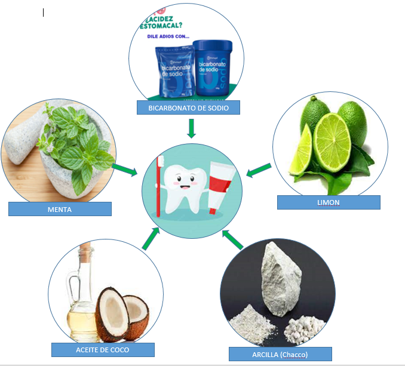

INSUMOS UTILIZADOS PARA EL PRESENTE PROYECTO
El uso del bicarbonato de sodio tiene muchos beneficios y su aplicabilidad es variada
El chacco es una arcilla que tiene propiedades preventivas y curativas
I am a very simple card. I am good at containing small bits of information. I am convenient because I require little markup to use effectively.
I am a very simple card. I am good at containing small bits of information. I am convenient because I require little markup to use effectively.
I am a very simple card. I am good at containing small bits of information. I am convenient because I require little markup to use effectively.